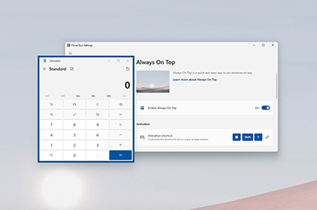

Always On Top utility
PowerToys Always On Top is a system-wide Windows utility that allows you to pin windows above other windows. This utility helps you keep important windows visible at all times, improving your productivity by ensuring critical information stays accessible while you work with other applications.

Pin a window
When you activate Always On Top (default: ⊞ Win+Ctrl+T), the utility pins the active window above all other windows. The pinned window stays on top, even when you select other windows.
Unpin a window
To unpin a window pinned by Always On Top, you can either use the activation shortcut again or close the window.
Settings
Always On Top has the following settings:
| Setting | Description |
|---|---|
| Activation shortcut | The customizable keyboard command to turn on or off the always-on-top property for that window. |
| Do not activate when Game Mode is on | Prevents the feature from being activated when actively playing a game on the system. |
| Show a border around the pinned window | When On, this option shows a colored border around the pinned window. |
| Color mode | Choose either Windows default or Custom color for the highlight border. |
| Color | The custom color of the highlight border. Color is only available when Color mode is set to Custom color. |
| Opacity (%) | The opacity of the highlight border. |
| Thickness (px) | The thickness of the highlight border in pixels. |
| Enable rounded corners | When selected, the highlight border around the pinned window will have rounded corners. |
| Play a sound when pinning a window | When selected, this option plays a sound when you activate or deactivate Always On Top. |
| Excluded apps | Prevents you from pinning an application using Always On Top. Add an application's name to stop it from being pinned. The list will also exclude partial matches. For example, Notepad will prevent both Notepad.exe and Notepad++.exe from being pinned. To only prevent a specific application, add Notepad.exe to the excluded list. |
Install PowerToys
This utility is part of the Microsoft PowerToys utilities for power users. It provides a set of useful utilities to tune and streamline your Windows experience for greater productivity. To install PowerToys, see Installing PowerToys.